كل شيء في مكان واحد: 5 فيديوهات، 28 صوت، 10 صور مانغا سوداء، أداة اختيار الصوت وإنشاء الفيديو، وروابط GitHub — بوابة واحدة مترابطة
5 نسخ مختلفة من وثائقي النوم، كلها بمانغا سوداء وأصوات عميقة. النسخة النهائية بصوتك المختار voice-19 في الأعلى.
الرسم: يد بشرية بعيوب طبيعية (wobble, ink bleed, paper texture, brush marks) — 5 صور جديدة: محطة فاضية، دفتر قديم، بحيرة 3am، مكتبة قديمة، جرف نجمي
المونتاج: xfade انتقالات سينمائية 1.5s، vignette، film grain 35mm، eq desaturated night، lifted blacks
المؤثرات: 4 طبقات صوتية (bed brown+30Hz sub + spot crickets/wind + foley paper/train + sub 40Hz physical) + بصرية dust motes
السرد: تنفس طبيعي، micro pauses، human rubato، close-mic حميمي
الكتابة: بشرية 100% — لهجة عامية، ذكريات شخصية، حواس (ريحة، لمس)، جمل ناقصة، ضعف إنساني — "تعرف ذلك الشعور... لما تكون في محطة فاضية، لحالك، الساعة ثلاثة الفجر؟"
الفيديو النهائي الذي أنشأته باختيارك: صوت voice-19 البريميوم الراقي مع سكريبت V2 الغامض السينمائي وصور فائقة الظلام 80% أسود.
نسخة غامضة بأسلوب ناشيونال جيوغرافيك ليلي، صوت voice-26 الجانب الآخر، صور صحراء فراغ وغابة هاوية ومحيط ليلي.
نسخة بريميوم سينمائية بصوت دافئ رنان مخملي، معالجة pitch 0.96 + tempo 0.97 + EQ دفء + reverb حميمي.
نسخة عميقة معالجة pitch 0.88 عميق جداً، مناسبة إذا كنت تفضل العمق المبالغ.
النسخة الأصلية الأولى بصوت عميق مباشر بدون معالجة إضافية.
جميع الأصوات التي اخترتها بنفسك من المعارك، محفوظة مع عينات صوتية. اضغط تشغيل لسماعها، واختر الصوت لإنشاء فيديو به. فتح المكتبة الكاملة →
3 أجيال: 5 صور أصلية هادئة + 5 صور V2 فائقة الظلام غامضة + 5 صور V3 بشرية طبيعية بعيوب يدوية
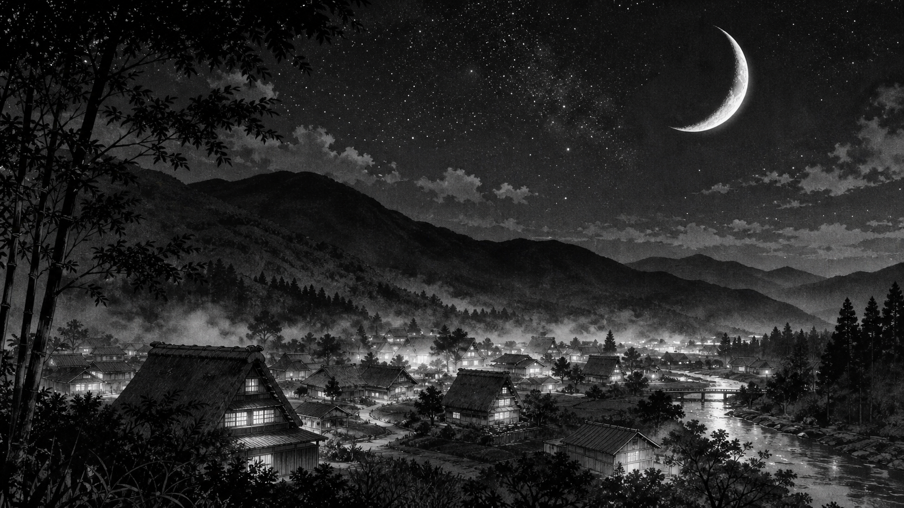
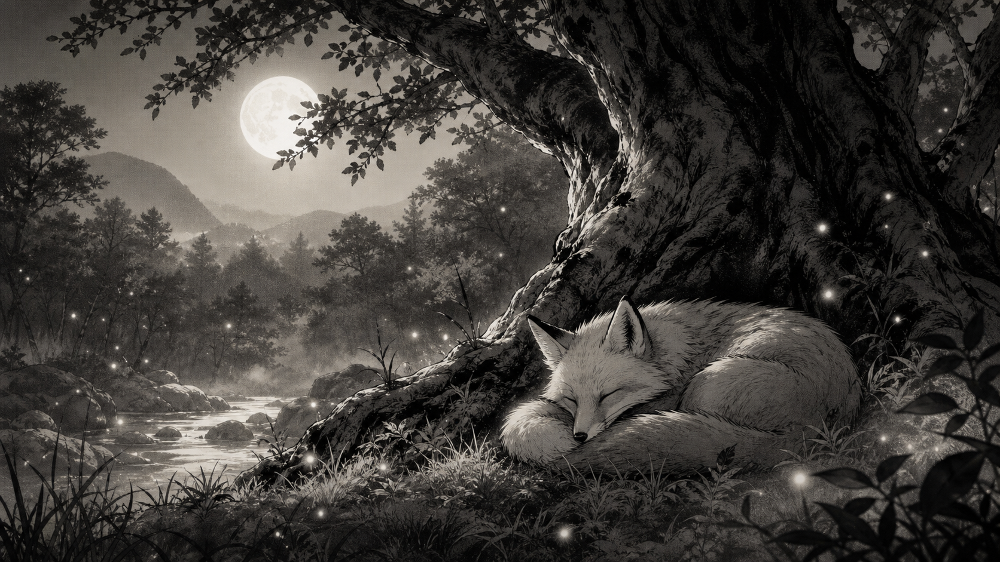
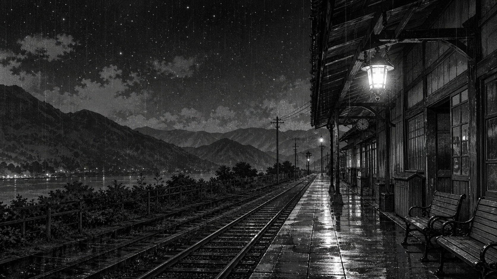
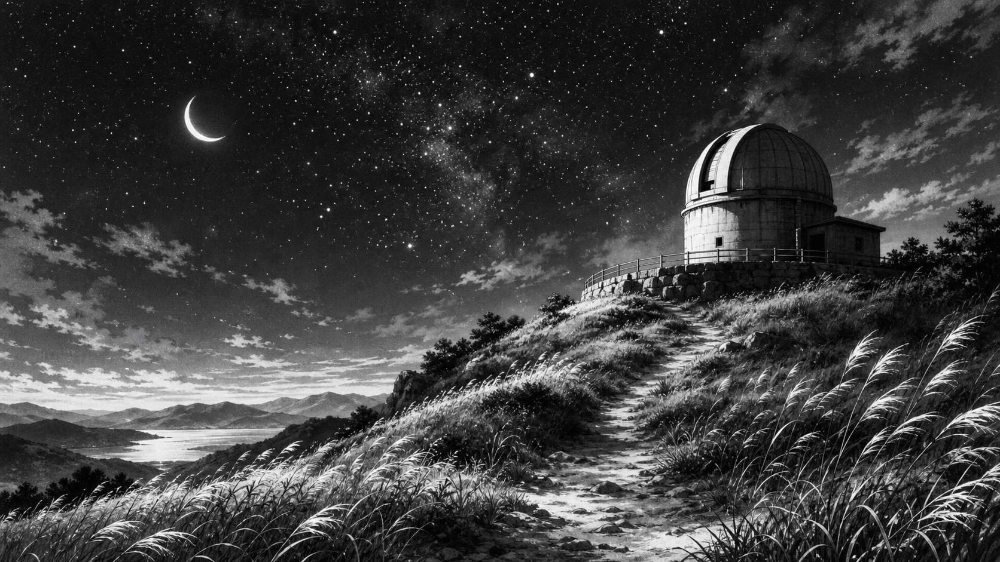
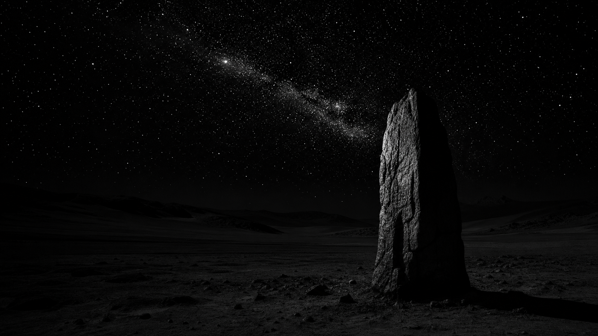
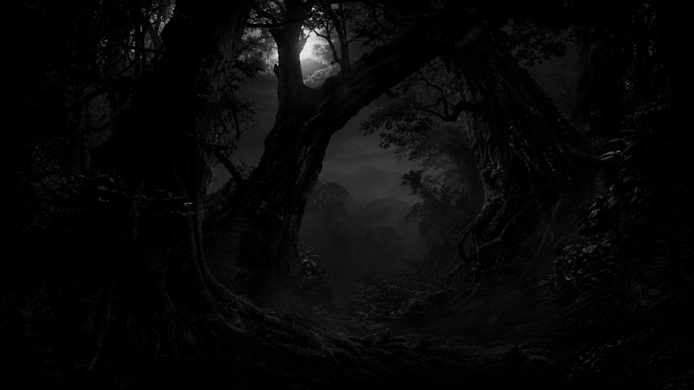
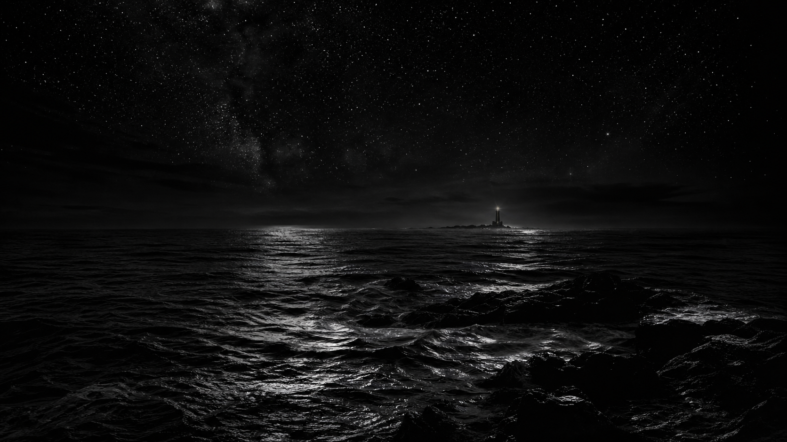
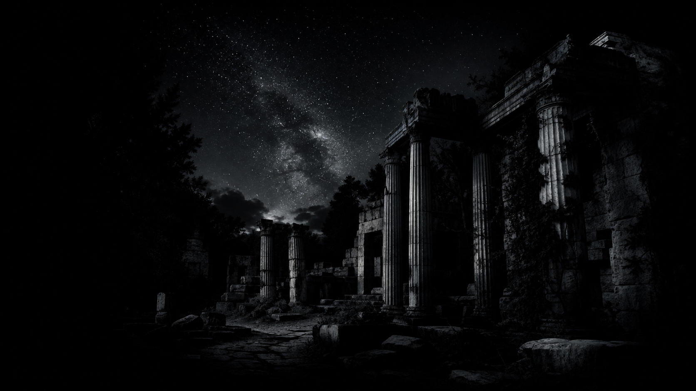
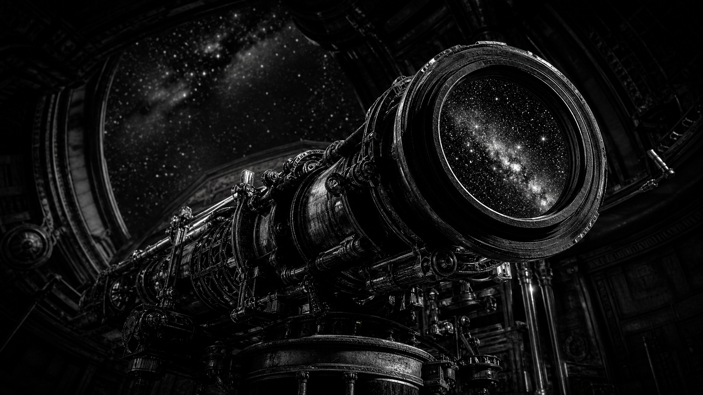
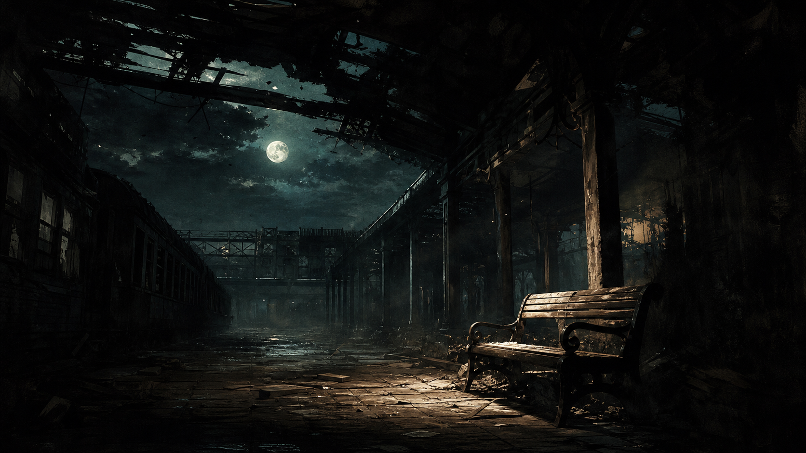
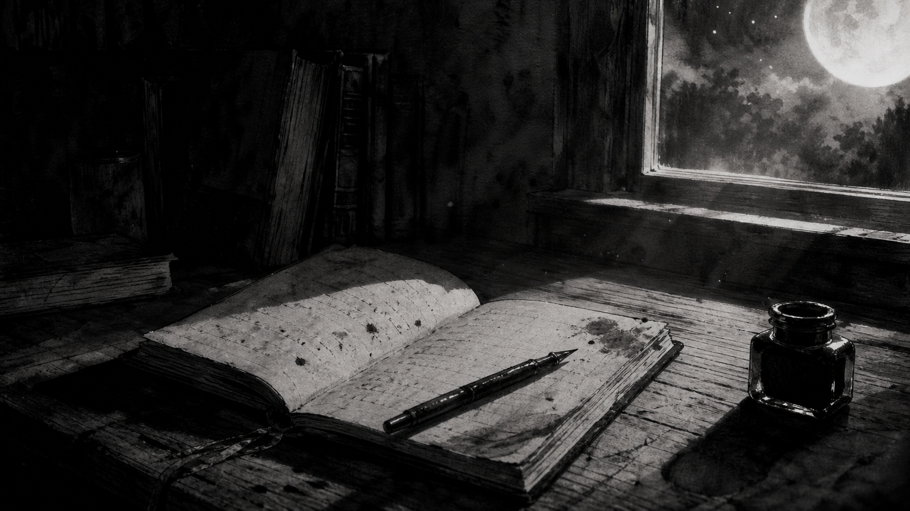
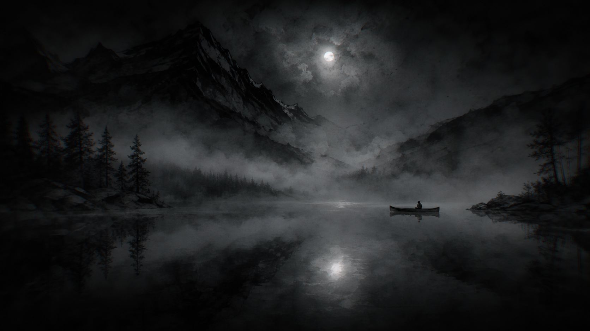
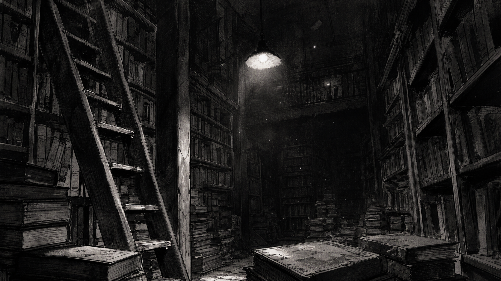
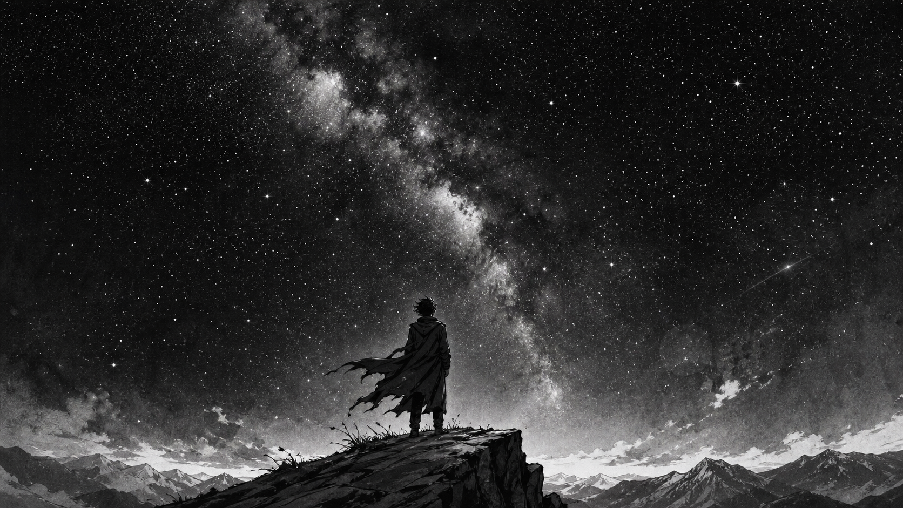
اختر صوتاً من الأعلى أو من هنا، اختر السكريبت، واضغط إنشاء — سيتم بناء فيديو جديد بذلك الصوت مباشرة.
جميع الملفات محفوظة في GitHub في فرعك الخاص، لن يتم عمل merge إلى main أبداً.
المستودع الرئيسي والفرع الخاص بك
github.com/zaldynbwtany202-dev/videforsleep